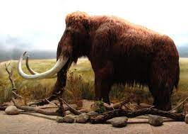

MAMUT

¿Qué es un Mamut?
Mammuthus es un género extinto de mamíferos proboscídeos de la familia Elephantidae conocidos comúnmente como mamuts.
Se existieron desde hace aproximadamente 4,8 millones de años hasta hace apenas 3700 años, en las épocas Plioceno.Se han hallado fósiles de mamut en Norteamérica, Eurasia y África. No debe confundirse con el género Mammut, que pertenece a una familia distinta (Mammutidae, conocidos comúnmente como mastodontes)
Caracteristicas del Mamut
Los mamuts eran herbívoros (comían plantas) y consumían entre 130 y 140 kilos de vegetación al día.Sus largas trompas estaban especialmente adaptadas para arrancar hierbas, y sus dientes planos y parecidos a tablas de lavar eran muy eficaces para masticar plantas.
También llevaban una pesada carga, ya que ¡un solo colmillo podía pesar más de 50 kilos y crecer hasta más de 4 metros de largo! En total, con aproximadamente 10.000 kilos, un mamut era tan pesado como un autobús escolar.